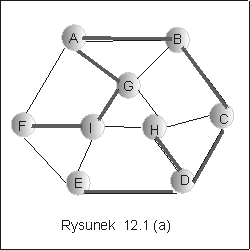
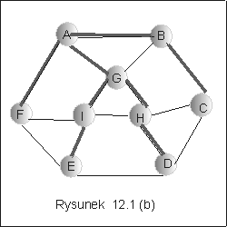
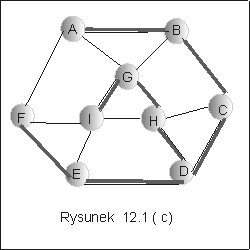
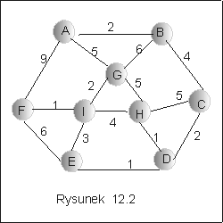
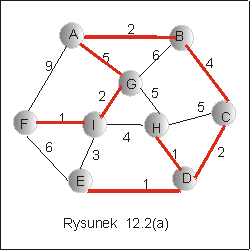
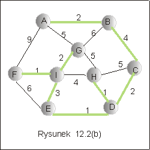

| « poprzedni punkt | nastêpny punkt » |
Niech G = <V, E> bêdzie dowolnym grafem niezorienowanym, spójnym.
Przyk³ad 1.1
Na rysunku 12.1 przedstawiono graf niezorientowany i trzy ró¿ne drzewa
rozpinaj±ce tego grafu.
|  |  |  |
Uwaga. Drzewo rozpinaj±ce grafu o n wierzcho³kach ma n
wierzcho³ków
i n-1 krawêdzi.
Przyklad 1.2
Uwaga
U¿ywamy tu s³owa "koszt" dla funkcji przypisuj±cej warto¶ci
krawêdziom, jednak interpretacj± dla warto¶ci tej funkcji mo¿e byæ
odleg³o¶æ, czas, ciê¿ar, czy dowolny inny parametr charakteryzuj±cy
krawêdz, zale¿nie od konkretnej sytuacji i zastosowania, w którym
rzeczywist± sytuacjê modelujemy jako graf. W literaturze u¿ywa siê
nazwy "wagi krawêdzi", jednak w tym kursie s³owo "waga" zosta³o
zarezerwowane dla wag wierzcho³ów w drzewach AVL.
Przyk³ad 1.3
|  |
Pytanie 1: A jaki jest
koszt
minimalnego drzewa rozpinaj±cego grafu 12.2?
Zastanówmy siê przez chwilê, jakie
za³o¿enia musz± byæ spe³nione, by istnia³o minimalne drzewo rozpinaj±ce
grafu niezorientowanego. Jest oczywiste, ¿e graf,
który nie jest spójny nie ma drzewa rozpinaj±cego: istniej± w tym
grafie co najmniej dwa wierzcho³ki, których nie mo¿na po³±czyæ
¿adn± drog±. Dlatego te¿ pojêcie drzewa rozpinaj±cego definiujemy
dla grafów niezorientowanych spójnych.
£atwo zauwa¿yæ, ¿e graf, który ma drzewo rozpinaj±ce, mo¿e mieæ wiêcej
ni¿ jedno minimalne drzewo rozpinaj±ce. Trywialnym przyk³adem jest
graf, w którym funkcja kosztu jest sta³a: wszystkie krawêdzie maj±
przypisan± tê sam± warto¶æ. Wtedy oczywi¶cie jest wiele ró¿nych
drzew
rozpinaj±cych. A kiedy minimalne drzewo rozpinaj±ce jest
wyznaczone jednoznacznie? Odpowiedzi± na to pytanie jest nastêpuj±cy
lemat.
Dowód.
Niech G bêdzie grafem spójnym o n
wierzcho³kach i przypu¶æmy, ze istniej± dwa drzewa rozpinaj±ce
grafu G o minimalnym koszcie, T1 i T2. Niech
bêd± odpowiednio ci±gami wszystkich krawêdzi drzew T1 i T2, uporz±dkowanymi rosn±co ze wzglêdu na funkcjê kosztu. Przyjmijmy, ¿e i jest najwiêkszym indeksem, takim ¿e krawêdzie drzew o mniejszych indeksach s± identyczne, tzn. e'1= e"1, e'2= e"2, ..., e'i-1= e"i-1. Poniewa¿ funkcja kosztu jest w tym grafie ró¿nowarto¶ciowa (z za³o¿enia) oraz krawêdzie na pozycji i-tej s± ró¿ne, to c(e'i ) ró¿ni siê od c(e"i ). Niech c(e'i ) < c(e"i ), dla ustalenia uwagi. Poniewa¿ krawêdz e'i nie nale¿y do T2, wiêc do³±czenie jej do T2 spowoduje powstanie cyklu. Gdyby wszystkie krawêdzie tego cyklu nale¿a³y do T1, to w T1 te¿ by³by cykl. Poniewa¿ tak nie jest (T1 jest drzewem), wiêc istnieje krawêdz e w tym cyklu, która nie nale¿y do T1. Wynika st±d, ¿e krawêdz e musi, w uporz±dkowanym ci±gu wszystkich krawêdzi, znajdowaæ siê na pozycji wiêkszej ni¿ i, czyli c(e'i ) < c(e). Rozwa¿my teraz graf T3, który powstaje z T2 przez odrzucenie krawêdzi e i do³±czenie krawêdzi e'i . T3 jest acyklicznym grafem, ma n wierzcho³ków i n-1 krawêdzi. Jest to wiêc drzewo rozpinaj±ce grafu G, ale
Doszli¶my do sprzeczno¶ci z
za³o¿eniem, e T2 jest minimalnym drzewem rozpinaj±cym, co dowodzi, ¿e
w rozwa¿anym przypadku istnieje dok³adnie jedno minimalne drzewo
rozpinaj±ce grafu.
Na zakoñczenie tego punktu zwróæmy uwagê, ¿e minimalne drzewo
rozpinaj±ce grafu nie musi byæ drzewem najkrótszych ¶cie¿ek z pewnego
ustalonego wierzcho³ka. Na rysunku 12.2(a) przedstawiono drzewo
najkrótszych ¶cie¿ek z wierzcho³ka A. Jest to oczywi¶cie drzewo
rozpinaj±ce grafu. Nie jest jednak minimalne. Minimalne drzewo
rozpinaj±ce tego grafu przedstawiono na rysunku 12.2(b). Oczywi¶cie,
mamy tu ¶cie¿ki z A do ka¿dego wierzcho³ka, ale niekoniecznie
najkrótsze.
|  |  |
Pytanie 2: Je¿eli D jest drzewem
rozpinaj±cym pewnego acyklicznego i spójnego grafu niezorientowanego o
m krawêdziach, to ile wierzcho³ków ma to drzewo?
| « poprzedni punkt | nastêpny punkt » |